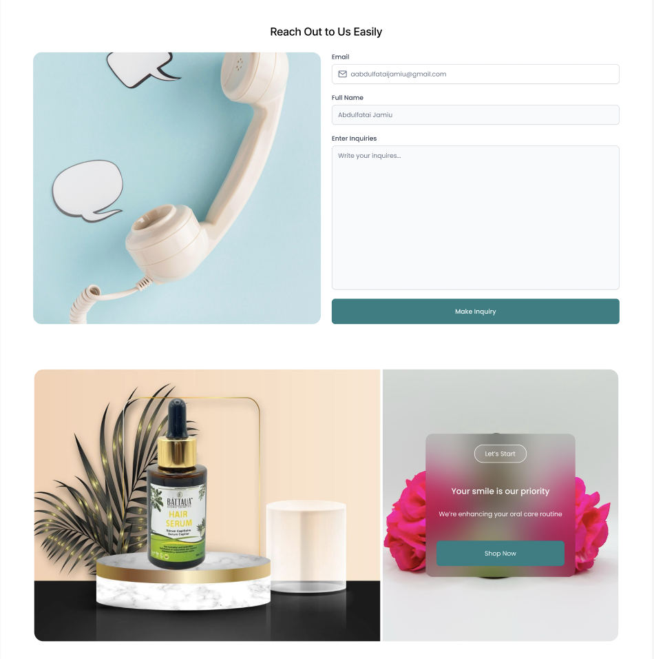
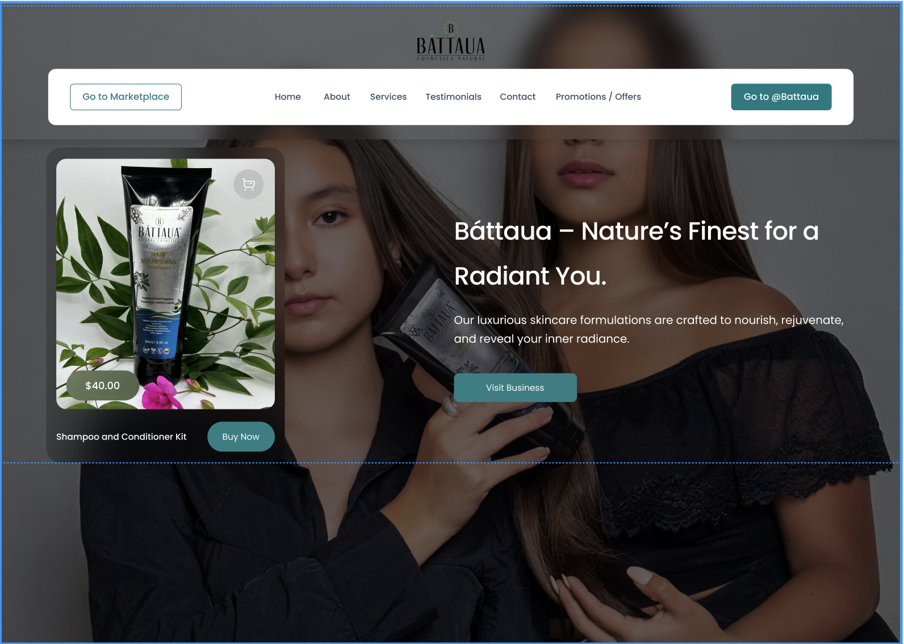
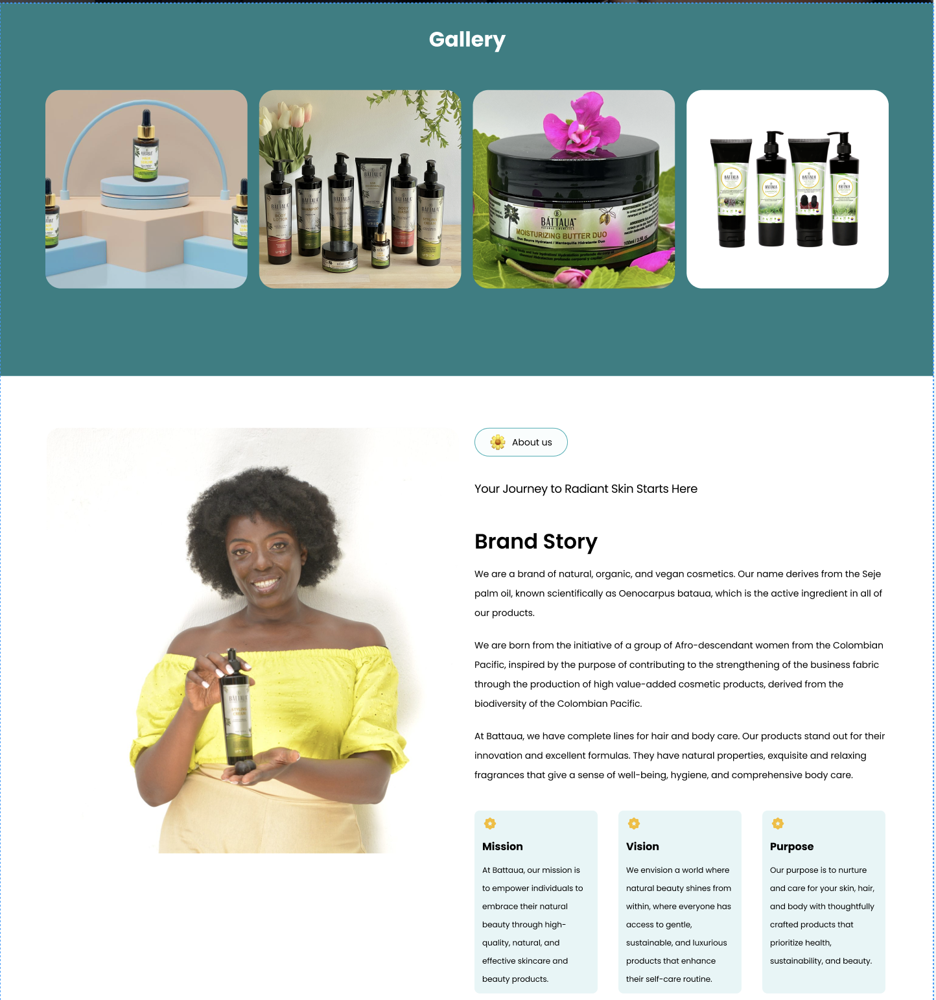
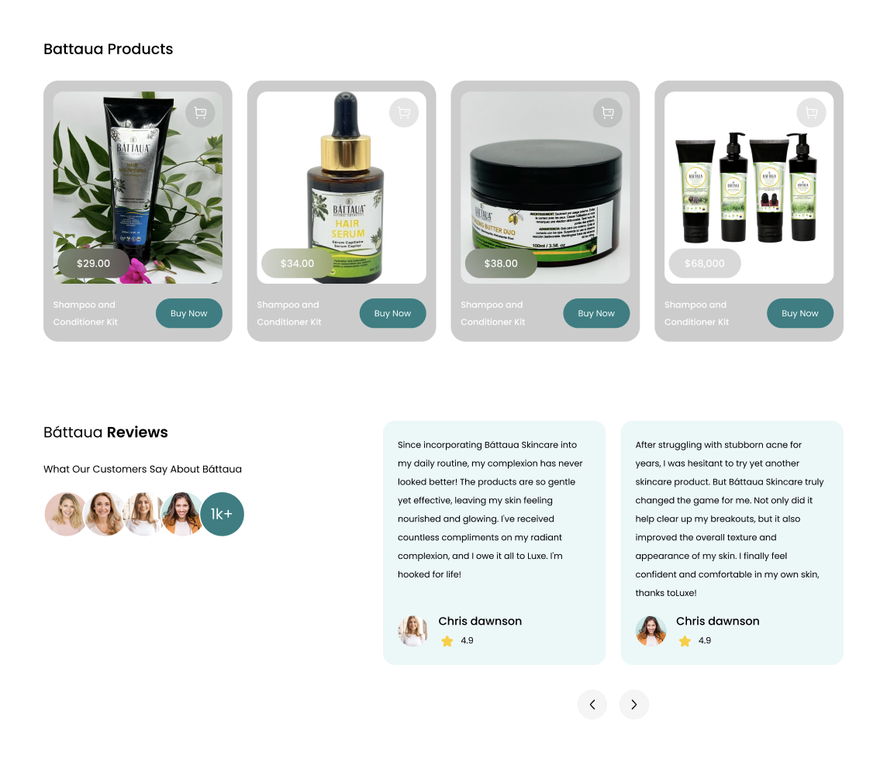
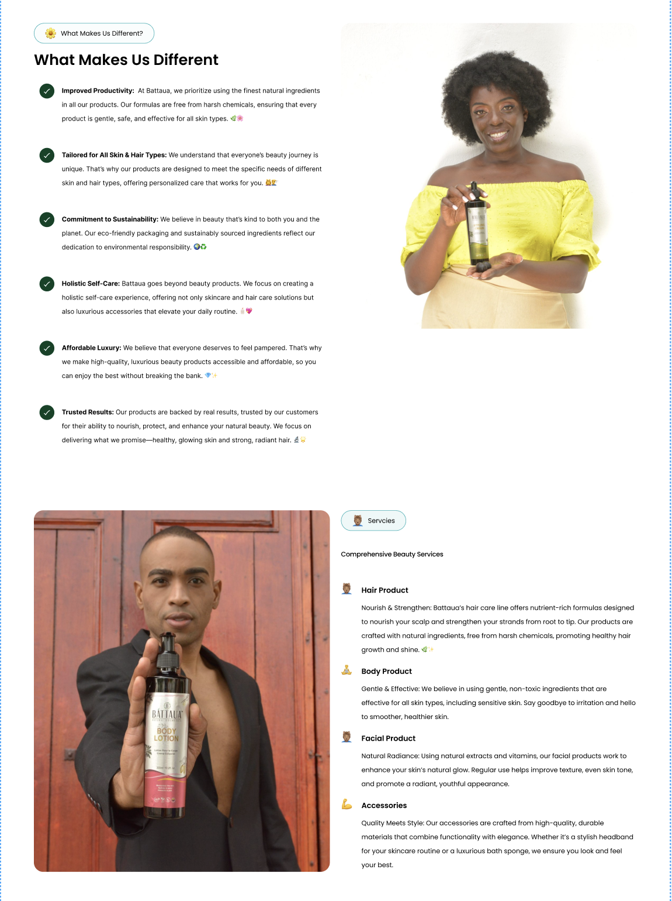

About Project
I independently led the design and development of a full website for Bizinc Battaua, a skincare brand aimed at modern consumers seeking clean beauty solutions. The goal was to create a visually cohesive, brand-aligned website that communicated product quality, brand values, and an elevated user experience across devices.
- Create a clean, minimalist design that reflects the brand’s commitment to natural skincare.
- Highlight hero products, ingredients, and brand ethos clearly and accessibly.
- Design responsive layouts optimized for both mobile and desktop browsing.
- Build a structure that supports future e-commerce integration.
Process
- Brand & User Research: I began with competitive research and visual analysis of successful skincare and beauty websites. I also studied user behaviors around online skincare shopping to identify key features like product education, clear calls-to-action, and trust-building elements (e.g., ingredient transparency).
- Wireframing & Visual Design: Using Figma, I sketched multiple wireframes to test content layout, hierarchy, and flow. I designed several iterations of the homepage, product listing, and about pages—each refined through feedback from a supervisor with experience in branding.
- Visual Identity: OI established a neutral color palette and paired it with soft typography to reinforce the brand’s gentle, natural vibe. Consistent use of whitespace and minimalistic design elements created a polished, high-end feel.
- Usability & Accessibility: Ensured the design was accessible with legible typography, contrast-checked elements, and a mobile-first approach. Visual hierarchy and scannable content blocks were designed to help users quickly find what they need.
- Feedback & Iteration: Throughout the process, I reviewed the design with a project supervisor and made adjustments based on UX and visual feedback. This included refining button placement, enhancing product visibility, and simplifying the navigation.
Outcome
The final design is a polished, user-friendly skincare website that balances aesthetics and clarity. The layout effectively introduces the brand and guides users through its product offerings. This project showcases my ability to work independently, implement feedback, and design a clean, functional digital product aligned with real-world brand goals.Gallery




